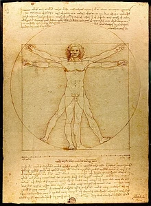

Однією із найяскравіших та найзагадковіших фігур епохи Високого Відродження був Леонардо да Вінчі.
Геніальний художник, який створив найвідомішу в світі картину „Монну Лізу”, або як її ще називають „Джоконду”,
та найзнаменитішу фреску „Таємна вечеря” був в той же час автором невеликої кількості картин.
Прекрасний інженер, що розробляв ідеї підводного плавання, польоту людини, використання механізмів під час
військових дій, що так і не стали зрозумілими для сучасників. Визначний анатом, який створив досконалі
анатомічні атласи людини та був змушений переховуватися за свої дослідження від переслідувань церкви.
Визначний математик і механік, який розвинув вчення Евкліда та Архімеда і не зміг донести до нащадків свої
відкриття.
Вітрувієва людина
Вітрувіа́нська люди́на — знаменитий малюнок, що супроводжується пояснювальними написами. На ньому зображена
фігура оголеного чоловіка в двох накладених одна на іншу позиціях: з розведеними в сторони руками і ногами,
вписана в коло; з розведеними руками та зведеними разом ногами, вписана в квадрат. Малюнок і пояснення до
нього іноді називають канонічними пропорціями.

Монна Ліза (Джоконда)
У 1499 році французи захопили Мілан і Леонарда да Вінчі був змушений покинути місто. Почалися його мандри
у розшуках притулку. На деякий час художник зупинився у Флоренції. Тут, за однією із версій, на замовлення
багатого флорентійця Франческо ді Бартоломео дель Джокондо він створив портрет третьої дружини замовника –
Мадонни
(або Мони) Лізи. Хоча багато сучасних дослідників вважають цей історичний факт недоведеним і переконані,
що на картині зображена інша особа.

Автопортрет
Досить великий за розмірами малюнок Леонардо зі збережених до 20 століття. Обличчя старої особи надто
наближене до глядача, але зустрітися очима з зображеним неможливо. Він дивиться вдалечінь, зосереджений
на власних думках і майже похмурий. Художник не приховав зморшок на обличчі і відбитку поневірянь і
життєвих трагедій. Водночас перед глядачем постає особа натхнена, уперта, незламна. Більшість дослідників
схильна вважати, що це — пізній автопортрет Леонардо да Вінчі, створений в 1512 році, коли митцю
виповнилось 60 років. На обличчі старого — відбиток надзвичайно ускладненої свідомості людини,
коли навіть пам'ять здатна принести лише жалі та болі, втрати, а не перемоги.
Мадонна з немовлям
Приваблива молода жінка тримає в руках немовля, якого годує груддю. Тлом для образу стала стіна з двома
напівциркульними вікнами. Світло розсіяне і не дає різких чорних тіней. Це і є уславлене леонардовське
сфумато. Гірський краєвид у блакитних тонах теж характерна ознака робіт майстра Високого Відродження.
Гори присутні і в інших роботах Леонардо — «Мадонна з веретеном», на фресці «Тайна вечеря», в уславленій
«Джоконді». Жінка дивиться на дитину ніжно і задумливо. Ледь помітна усмішка додає Мадонні ще більшої
привабливості й краси. Якщо придивитися, то помітно, що маленький Христос притримує лівою рукою щиглика.
Після смерті Леонардо да Вінчі його записки скуповувалися по всьому світу. Зараз частина
з них знаходиться у багатьох музеях. Але, на жаль, зрозуміти, що мав на увазі Леонардо да
Вінчі у своїх записах, надзвичайно складно. Різні зшитки представляють собою нотатки різних років.
А якщо врахувати, що, іноді, він любив писати з кінця зошита на початок, з низу сторінки до верху,
справа на ліво та ще й у дзеркальному відображенні, то залишається тільки здогадуватись як відбувався
хід думок визначного мислителя і творця.
І в теперішні часи, через пів тисячоліття після його смерті, багато загадок пов’язаних з іменем
Леонардо да Вінчі, залишаються нерозкритими.